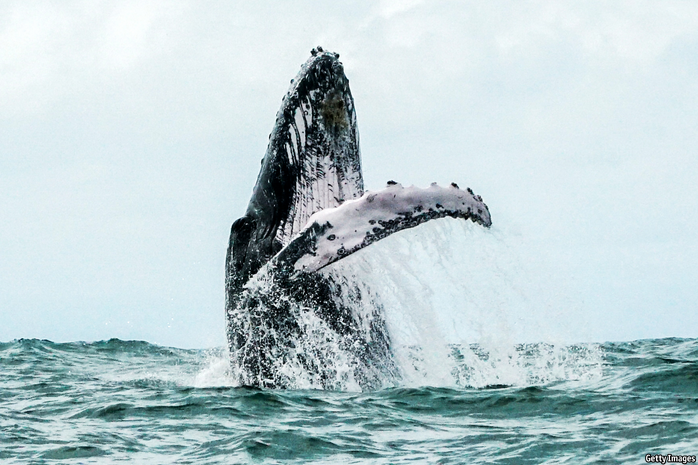

2020-12-16T04:47:41+00:00
Creatures of the deep
深海生物
深海生物
Thar she blew
最后的哀鸣
最後的哀鳴
An encounter with a dying whale on a beach in Perth set off Rebecca Giggs’s inquiry
与珀斯海滩上一条垂死鲸鱼的邂逅开启了丽贝卡·吉格斯的探寻之旅【《沧海鲸吟》书评】
與珀斯海灘上一條垂死鯨魚的邂逅開啟了麗貝卡·吉格斯的探尋之旅【《滄海鯨吟》書評】
TWO YEARS ago your reviewer stood in an office overlooking the Pacific Ocean at the Monterey Bay Aquarium Research Institute in Moss Landing, California. Outside, giant pelicans sliced through the sea air. Inside, the walls and windows were shaken by a below-bass note that boomed out of huge speakers. This, said John Ryan, an oceanographer, was the moan of a humpback whale, the darling of whale-watchers, known for its impressive fin- and tail-slapping displays and haunting “song”. Most recordings of humpbacks seem almost violin-like, but this was much, much deeper—barely a sound, more a vibration that was felt rather than heard.
两年前，在加州莫斯兰丁（Moss Landing）的蒙特雷湾水族馆研究所（Monterey Bay Aquarium Research Institute），笔者站在一个俯瞰太平洋的办公室里。屋外，巨大的鹈鹕在大海上空划过。屋内，从巨大的扬声器传出超低音轰鸣，墙壁和窗户都在震动。海洋学家约翰·瑞恩（John Ryan）说，这是座头鲸发出的吟唱。座头鲸用鳍和尾巴拍击水面的壮观表演以及余音不绝的“歌声”闻名于世，深得观鲸者喜爱。座头鲸的录音听起来大多近似小提琴，但要深厚太多——简直不能说是听到的声音，而是感觉到的震颤。
兩年前，在加州莫斯蘭丁（Moss Landing）的蒙特雷灣水族館研究所（Monterey Bay Aquarium Research Institute），筆者站在一個俯瞰太平洋的辦公室里。屋外，巨大的鵜鶘在大海上空划過。屋內，從巨大的揚聲器傳出超低音轟鳴，牆壁和窗戶都在震動。海洋學家約翰·瑞恩（John Ryan）說，這是座頭鯨發出的吟唱。座頭鯨用鰭和尾巴拍擊水面的壯觀表演以及餘音不絕的“歌聲”聞名於世，深得觀鯨者喜愛。座頭鯨的錄音聽起來大多近似小提琴，但要深厚太多——簡直不能說是聽到的聲音，而是感覺到的震顫。
In the opening scene of “Fathoms”, Rebecca Giggs describes a very different kind of encounter with a humpback: on a beach in Perth, Australia, where a young giant had found itself stranded. For three days, she witnessed its enormous mass crushing its vital organs; the blubber that evolved over millions of years to keep the species alive in the frigid abyss now had the opposite effect. The humpback, she says, “was boiling alive in the kettle of itself”.
在《沧海鲸吟》（Fathoms）的开篇，丽贝卡·吉格斯（Rebecca Giggs）描述了她与座头鲸一次非同寻常的相遇：在澳大利亚珀斯的一处海滩上，一头年轻的庞然大物搁浅了。三天里，她目睹了它沉重的身躯压坏了自己的重要器官；历经千百万年进化、让它们得以在冰冷深海中生存的鲸脂现在却产生了相反的效果。她说，这头座头鲸“就像热水壶，把自己活生生地煮沸了”。
在《滄海鯨吟》（Fathoms）的開篇，麗貝卡·吉格斯（Rebecca Giggs）描述了她與座頭鯨一次非同尋常的相遇：在澳大利亞珀斯的一處海灘上，一頭年輕的龐然大物擱淺了。三天里，她目睹了它沉重的身軀壓壞了自己的重要器官；歷經千百萬年進化、讓它們得以在冰冷深海中生存的鯨脂現在卻產生了相反的效果。她說，這頭座頭鯨“就像熱水壺，把自己活生生地煮沸了”。
Stirred by this encounter, Ms Giggs embarks on a poetic exploration of the largest creatures alive today. “Fathoms” is a series of essays that span aeons and vast amounts of space, from the bottom of the ocean to the far reaches of the solar system. The Voyager probe carries a recording of humpback song; ionic bursts at the surface of the Sun ricochet through space, provoke the shimmery displays of the Northern Lights and eventually disrupt the geomagnetic-field maps that whales use to orient themselves. Throughout, Ms Giggs weaves the human and whale stories around a central question: did the conservationists of the late 20th century save the whales from extinction-by-slaughter, only to deliver them to a more insidious demise? From plastics to toxins, warming oceans, melting sea ice, acidifying waters and modified soundscapes, humanity is warping everything that whales need to live and thrive.
吉格斯被这次邂逅触动，对这种现存最大的生物展开了一场充满诗意的探索。《沧海鲸吟》是一部散文系列，从海底到太阳系深处，跨越了亿万年和浩瀚空间。“旅行者号”（Voyager）探测器携带了录有座头鲸歌声的唱片；太阳表面的离子爆发在太空中弹射，激发了闪烁的北极光，最终干扰了鲸鱼用于自我定位的地磁场图。由始至终，吉格斯围绕着一个中心问题讲述人与鲸的故事：20世纪晚期的环保主义者将鲸鱼从被屠杀灭绝的命运中拯救下来，难道最终也只是让它们更悄无声息地灭亡吗？从塑料到毒素、海洋变暖、海冰融化、水体酸化和声景改变，人类正在扭曲着鲸鱼赖以生存和繁衍的一切。
吉格斯被這次邂逅觸動，對這種現存最大的生物展開了一場充滿詩意的探索。《滄海鯨吟》是一部散文系列，從海底到太陽系深處，跨越了億萬年和浩瀚空間。“旅行者號”（Voyager）探測器攜帶了錄有座頭鯨歌聲的唱片；太陽表面的離子爆發在太空中彈射，激發了閃爍的北極光，最終干擾了鯨魚用於自我定位的地磁場圖。由始至終，吉格斯圍繞着一個中心問題講述人與鯨的故事：20世紀晚期的環保主義者將鯨魚從被屠殺滅絕的命運中拯救下來，難道最終也只是讓它們更悄無聲息地滅亡嗎？從塑料到毒素、海洋變暖、海冰融化、水體酸化和聲景改變，人類正在扭曲着鯨魚賴以生存和繁衍的一切。
Many of these changes are reflected in the whales themselves. Their flesh, guts, blood and even their song are all, in this telling, a record of human activity. One whale is found to have ingested an entire greenhouse. Postmortems performed on others reveal gas-bubble lesions, ruptured ear canals and abnormal nitrogen levels, all of which are eventually linked to anti-submarine warfare training. And after the 9/11 terrorist attacks, researchers who were monitoring stress hormones in North Atlantic right whales (by analysing their faeces) noticed that their subjects had relaxed, presumably because most ships temporarily returned to port and, for that time, the oceans were quiet.
许多这样的变化都在鲸鱼身上显现。它们的躯体、内脏、血液，甚至歌声，都留下了人类活动的印记。有一次，人们发现一头鲸鱼实际上吞下了一整个暖房。对其他死去的鲸鱼的解剖显示了气泡损伤、耳道破裂和氮水平异常，最终发现这些都与反潜军事演习有关。911恐怖袭击事件后，监测北大西洋露脊鲸的应激激素（通过分析粪便）的研究人员注意到这些研究对象放松了下来，大概是因为大多数船舶暂时返回了港口，在那段时间里海洋恢复了宁静。
許多這樣的變化都在鯨魚身上顯現。它們的軀體、內臟、血液，甚至歌聲，都留下了人類活動的印記。有一次，人們發現一頭鯨魚實際上吞下了一整個暖房。對其他死去的鯨魚的解剖顯示了氣泡損傷、耳道破裂和氮水平異常，最終發現這些都與反潛軍事演習有關。911恐怖襲擊事件後，監測北大西洋露脊鯨的應激激素（通過分析糞便）的研究人員注意到這些研究對象放鬆了下來，大概是因為大多數船舶暫時返回了港口，在那段時間裡海洋恢復了寧靜。
Death runs through the pages. Today it would be impossible to write a book about whales that did not combine a sense of awe with inevitable tragedy. But “Fathoms” is brilliantly full of wonder. A passage lingers on whale lice, describing how, even now, their genes hold traces of an epic migration made by at least one right whale in the past 1m-2m years. Another marvels at how the decimation of whales in the oceans has transformed ecologies on land: the past movements of whaling communities can be traced in aerial surveys of Arctic vegetation, in places made richer and greener by buried giants. A third section asks whether conserving whale populations might help stabilise the climate. Whales draw carbon dioxide out of the atmosphere and down into the abyss, by fertilising tiny plankton with their faeces, as well as when they die and sink to the sea floor.
死亡贯穿全书。如今要写一本关于鲸鱼的书难免兼具敬畏之情和无可避免的悲剧。但《沧海鲸吟》高明地满载神奇。其中有一个关于鲸虱的段落，描述了即使到现在它们的基因仍保留了过去一两百万年间至少一头露脊鲸史诗般迁徙的痕迹。另一段文字感叹海洋中的鲸鱼被大量捕杀如何改变了陆地上的生态：对北极植被的航空勘测可以追踪过去捕鲸族群的活动轨迹，他们所到之处埋葬的巨鲸让当地变得更加丰饶而葱郁。还有一段探讨了保护鲸鱼种群是否有助于稳定气候。鲸鱼的粪便给微小的浮游生物提供了养分，以及它们在死亡后沉入海底，都相当于从大气中吸取二氧化碳输送到深海。
死亡貫穿全書。如今要寫一本關於鯨魚的書難免兼具敬畏之情和無可避免的悲劇。但《滄海鯨吟》高明地滿載神奇。其中有一個關於鯨虱的段落，描述了即使到現在它們的基因仍保留了過去一兩百萬年間至少一頭露脊鯨史詩般遷徙的痕迹。另一段文字感嘆海洋中的鯨魚被大量捕殺如何改變了陸地上的生態：對北極植被的航空勘測可以追蹤過去捕鯨族群的活動軌跡，他們所到之處埋葬的巨鯨讓當地變得更加豐饒而蔥鬱。還有一段探討了保護鯨魚種群是否有助於穩定氣候。鯨魚的糞便給微小的浮游生物提供了養分，以及它們在死亡後沉入海底，都相當於從大氣中吸取二氧化碳輸送到深海。
The tragedy is detached rather than gory. In places it is beautiful. The afterlife of a whale is tracked from the surface, where its floating carcass is pecked, chewed and debrided by scavengers, down through the water column, past fish that resemble “bottled fireworks”, to its resting place on the seabed. There, “the ballooning mass scatters skin and sodden flesh…upon which grows a carpet of white worms.” One “whale fall” feeds entire ecosystems. It jiggles with life—crabs, fish, worms, bacteria. “A whale body is, to this glitter splash of biology, a godsend,” writes Ms Giggs in one of her finest turns of phrase.
对悲剧的描述并不血腥，而是超然。有时还颇具美感。鲸鱼死后的故事从海面开始，漂浮的鲸尸被食腐动物啄、啃和清理，然后穿过各层海水下降，途经类似“瓶装烟花”般的鱼群，最后落到海床上的长眠之地。在那里，“皮肤和腐肉从肿胀的躯体上散落下来……上面长满了白色的蠕虫。”一鲸落，万物生，一个个生态系统得到了滋养。这里生机盎然——蟹、鱼、蠕虫、细菌。“对于这个灿烂的小小生物圈来说，鲸鱼的躯体乃是天赐之物。”吉格斯在此以最优美的笔调写道。
對悲劇的描述並不血腥，而是超然。有時還頗具美感。鯨魚死後的故事從海面開始，漂浮的鯨屍被食腐動物啄、啃和清理，然後穿過各層海水下降，途經類似“瓶裝煙花”般的魚群，最後落到海床上的長眠之地。在那裡，“皮膚和腐肉從腫脹的軀體上散落下來……上面長滿了白色的蠕蟲。”一鯨落，萬物生，一個個生態系統得到了滋養。這裡生機盎然——蟹、魚、蠕蟲、細菌。“對於這個燦爛的小小生物圈來說，鯨魚的軀體乃是天賜之物。”吉格斯在此以最優美的筆調寫道。
When she encounters a live whale, she feels herself shrink to the size of a pinhead yet retains the detachment that she applies, elsewhere, to her observation of dead ones. She does not sense the affinity that others aver. “Only the most witless individual would believe in a benevolent connection with real whales,” she insists. In the presence of leviathan, “the adrenalin in me was the kick of imminent danger.”■
当面对一条活鲸时，她感到自己缩得只有针尖大小，但她仍然保持着在别处观察死鲸时的那种超然。她并没有感受到其他人强烈声称的那种亲近感。她坚称：“只有最无知的人才相信和鲜活的鲸鱼之间存在一种善的连结。”在这个庞然大物面前，“我身体里的肾上腺素激烈地回应了凶险的迫近”。
當面對一條活鯨時，她感到自己縮得只有針尖大小，但她仍然保持着在別處觀察死鯨時的那種超然。她並沒有感受到其他人強烈聲稱的那種親近感。她堅稱：“只有最無知的人才相信和鮮活的鯨魚之間存在一種善的連結。”在這個龐然大物面前，“我身體里的腎上腺素激烈地回應了兇險的迫近”。